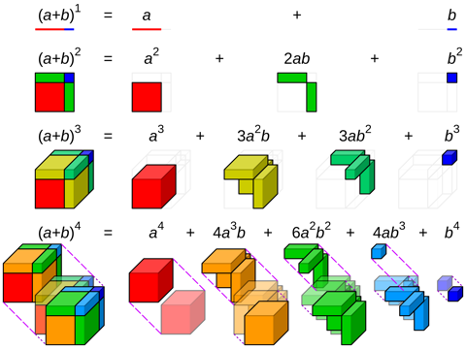

The binomial theorem
Introduction to Engineering Mathematics
Pascal’s triangle
Pascal’s triangle
Expand the following expressions and look at the coefficients.
- \((a + b)^0 = 1\)
- \((a + b)^1 = a + b\)
- \((a + b)^2 = a^2 + 2ab + b^2\)
- \((a + b)^3 = a^3 + 3a^2 b + 3ab^2 + b^3\)
- \((a + b)^4 = a^4 + 4a^3 b + 6a^2 b^2 + 4ab^3 + b^4\)
- \((a + b)^5 = a^5 + 5a^4b + 10a^3b^2 + 10a^2 b^3 + 5ab^4 + b^5\)
What do you notice?
Based on this pattern, what is \((a + b)^7\)?
Would you be able to write down \((a + b)^{27}\)?

Figures: Wikipedia.
Example
Use Pascal’s triangle to expand \(\displaystyle \left(2x + \frac{1}{x}\right)^5\).
Binomial coefficients
Binomial coefficients
- Factorial: \(n! = n(n-1)(n-2) \cdots 2 \cdot 1\).
- Binomial coefficient (also called “n-choose-k”): \[ {n \choose k} = C^k_n = \frac{n!}{k!(n-k)!}. \]
- Measures the number of ways of choosing \(k\) objects from among \(n\) choices.
Properties
For all \(n\) and \(k \le n\):
\[\begin{align*} {n \choose 0} & = {n \choose n} = 1 \\ {n \choose 1} & = {n \choose n - 1} = n \\ {n \choose k} & = {n \choose n - k} \end{align*}\]
Rewriting Pascal’s triangle using binomial coefficients
The binomial theorem
The binomial expansion
Putting everything we’ve learned together, we get \[ (a + b)^n = {n \choose 0} a^n b^0 + {n \choose 1} a^{n-1}b^1 + \cdots + {n \choose n-1} a^1 b^{n-1} + {n \choose n} a^0 b^n. \] This can be written more compactly as \[ (a + b)^n = \sum_{k = 0}^n {n \choose k} a^{n - k} b^k. \]
Example
Use the binomial expansion to expand \(\displaystyle (\sqrt{x} - 1)^7\).
Visual proof of the binomial expansion (optional)
